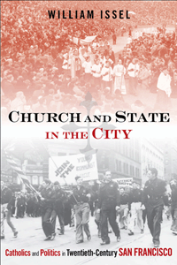

<body bgcolor="#FFFFFF" text="#000000" link="#0000FF" vlink="#CC0000" alink="#CC0000"><center><hr width="350" size="1" align="center" noshade>How Catholic religious activism shaped the language and outcome of San Francisco's debates about the common good and the public interest<hr width="350" size="1" align="center" noshade><p><a href="https://cdcshoppingcart.uchicago.edu/Cart/ChicagoBook.aspx?ISBN=9781439909911&&PRESS=temple" target="_top">Buy this book!</a> | <a href="https://cdcshoppingcart.uchicago.edu/Cart/Cart.aspx?PRESS=temple" target="_top">View Cart</a> | <a href="https://cdcshoppingcart.uchicago.edu/Cart/Cart.aspx?PRESS=temple" target="_top">Check Out</a></p><p></p></center><!--none//--><h1>Church and State in the City</h1>
<H2>Catholics and Politics in Twentieth-Century San Francisco</H2>
<h3>William Issel</h3>
<P>cloth 1-4399-0991-1 $87.50, Oct 12, <FONT COLOR=#990033>Available</FONT>
<br>paper 1-4399-0992-X $30.95, Nov 12, <FONT COLOR=#990033>Available</FONT>
<br>Electronic Book 1-4399-0993-8 $30.95 <FONT COLOR=#990033>Available</FONT>
<BR> 336 pp
6x9
11&nbsp;halftones
</P><BLOCKQUOTE><I>"</I>Church and State in the City<I> is a tour de force by a master historian. It places the Catholic Church at the forefront of an analysis which shows how San Francisco developed a moderate liberal political culture after the 1890s. The story is one of patient consensus building amongst a set of political actors which included the Church, the Communist Party, regular labor unions, business spokesmen, Republicans, Democrats, builders, planners, and neighborhood activists. Issel’s book is especially apt at describing the myriad demographic and cultural forces which formed a new politics that replaced this essentially New Deal politics, post 1980."</I> <br>&#151<b>Roger Lotchin</b>, Professor of History at the University of North Carolina at Chapel Hill, and author of <I>The Bad City in the Good War: San Francisco, Los Angeles, Oakland, and San Diego</I></I></BLOCKQUOTE>
<P><i>Church and State in the City</i> provides the first comprehensive analysis of the city's long debate about the public interest. Historian William Issel explores the complex ways that the San Francisco Catholic Church&#8212;and its lay men and women&#8212;developed relationships with the local businesses, unions, other community groups, and city government to shape debates about how to define and implement the common good.
Issel's deeply researched narrative also sheds new light on the city's socialists, including Communist Party activists&#8212;the most important transnational challengers of both capitalism and Catholicism during the twentieth century.
<P>Moreover, <i>Church and State in the City</i> is revisionist in challenging the notion that the history of urban politics and policy can best be understood as the unfolding of a progressive, secular modernization of urban political culture. Issel shows how tussles over the public interest in San Francisco were both distinctive to the city and shaped by its American character.
<BR>&nbsp;<h2>Excerpt</h2><P>Excerpt available at <a href="http://www.temple.edu/tempress">www.temple.edu/tempress</a></p>
<BR>&nbsp;<h2>Reviews</h2>
<p><I>"A meticulously researched and well-written account by one of San Francisco's most respected historians. Issel has illuminated the Bay City's twentieth-century political culture by accentuating the role of Catholic social teaching and the agency of activists who effectively mobilized in behalf of this faith-based vision of the public interest. Issel knits religion into the master narrative of San Francisco history not as a parallel story to the city's secular development, but as an integral part of its political infrastructure and public policy. </i>Church and State in the City<i> is an important contribution to California studies and a model for scholars who are discovering the richer and more complex urban history of the American West. Its findings will surprise some—including Roman Catholics—who think of San Francisco as the most secular city in America. Issel is in the forefront of scholars who have taken religion seriously as factor in shaping American life."</I> <br>&#151<b>Steven M. Avella</b>, Professor of History, Marquette University, and author of <I>Sacramento and the Catholic Church</I>
<p><I>"Issel’s extensively researched study puts Catholics and Catholic values at the center of San Francisco’s public policy–making process throughout much of the 20th century and thereby challenges nearly all recent studies of the city’s political history. It is therefore a must read not only for the history of San Francisco, but also for twentieth-century urban history more generally."</I> <br>&#151<b>Robert Cherny</b>, Professor Emeritus of History, San Francisco State University
<p><i>"[The book] restores the Catholic role in San Francisco’s development through the 1960’s to its rightful place in the city’s history.... Issel convincingly shows that Catholic institutions shaped San Francisco’s history far more than is understood. And from its backing of unions, civil rights, and the needs of the very poor, the Catholic Church fulfilled its mission of working for San Francisco’s greater good."</i> <br>&#151<b>BeyondChron</b>
<p><i>"William Issel's latest book, </i>Church and State in the City<i>, provides an important missing chapter in the telling of the history of San Francisco.... [It] is a 'must'--both for its content and its wealth of references--for any historians whose research is focused on San Francisco. It will make many readers rethink what they thought they knew about the evolution of the city politic and what place religion has played in San Francisco's social, economic, and cultural evolution."</i> <br>&#151<b>The Institute for Historical Study Newsletter</b>
<p><i>"Issel is concerned with highlighting the importance of Catholic Christianity in the political culture of 20th-century San Francisco. He accomplishes this through a critical, contextualized narrative of various issues in the city's history (1890s-1970s) in which Catholic faith-based politics contributed to defining the city's 'common good.'... Even though Issel's coverage of San Francisco's political history is not comprehensive, his narrative is densely detailed..... this solid book is worth adding to California, religious, and urban collections. Summing Up: Recommended."</i> <br>&#151<b><i>Choice</b></i>
<p><i>"Issel's book represents a fairly new and intriguing thrust among historians to chart religion and politics at local municipal levels."</i><br>&#151<b><i>America</b></i>
<p><i>"The book goes into great detail about the involvement of the Church in the various labor strikes that occurred in San Francisco during the twentieth century, making this a valuable book for those interested in labor history. This is a well-written and complete piece of scholarship that greatly illuminates the involvement of the Catholic Church in the public policy debates of the twentieth century. Although focused on San Francisco, it clearly places the events there in a national and international context as well as giving clear descriptions of the personalities and events that shaped the dynamics of the relationship between the Church and the urban political developments. This is a recommended book for undergraduate and graduate studies in both the History of American Catholicism and Urban History."</i><br>&#151<b><i>Catholic Library World</b></i>
<p><i>"[E]xhaustively researched and well-written.... Issel has made a strong case for the interaction of faith and politics in the City by the Bay.... [and] has done a commendable job in presenting a revisionist history of twentieth-century San Francisco...[The book] is richly contextualized and well organized; Issel has an engaging narrative style.... [He] has made a significant contribution to the history of San Francisco as well as Church-state issues."</i> <br>&#151<b><i>Catholic Historical Review</b></i>
<p><i>"</i>Church and State in the City<i> is a fascinating analysis of the political history of San Francisco. William Issel makes a compelling case for the central role of religion, particularly the Catholic Church, in the development of a liberal-minded politics in San Francisco from the 1890s through the 1980s.... [T]his book breaks new ground and makes a significant contribution to the fields of both urban and California history."</i> <br>&#151<b><i>Pacific Historical Review</b></i>
<p><i>"Issel's longstanding scholarly interest and expertise on the role of ethnicity, race, religion, and politics in American cities, particularly San Francisco, are readily evident in his most expansive treatment to date of church and politics in that city.... The volume presents a superb narrative of twentieth-century public life in San Francisco while deftly interweaving analyses of national politics, international Catholic trends, and the local San Francisco context. Most significantly, it is exemplary in its scholarly integration of urban, political, and religious history."</i> <br>&#151<b><i>Western Historical Quarterly</b></i>
<p><i>"[An] intriguing history of twentieth-century San Francisco.... Issel has written a complex account of contests (and alliances) among Catholics, labor activists, leftists and business interests to define the public interest.... A particularly interesting chapter on women’s activism showcases one strength of the book – its compelling mini-biographies – by using the careers of four women to illustrate their competing visions of the public good in this pivotal decade.... </i>Church and State in the City<i> forms part of an exciting new trend in which scholars are bringing religion from the margins to the center of political history. Moving beyond a tired dynamic in which the Catholic Church in particular is either absent from the story, or vilified as a conservative force that discouraged workers from joining transformative left-wing movements, historians are recognizing the complex ways in which religious institutions and their members influenced public life. Issel’s convincingly argued and meticulously researched book is a welcome addition to this field. His book is a must-read for any advanced student of urban, Catholic and political history in twentieth-century America."</i> <br>&#151<b><i>American Catholic Studies</b></i>
<p><i>"In </i>Church and State in the City<i> the venerable historian William Issel provides an in-depth examination of the juxtaposition of Catholic teaching—both social and economic—and the search for a vision of the public interest as it played out in San Francisco’s public policy–making debates from the 1890s to the 1970s.... [T]his impressive political history of twentieth-century San Francisco will be fruitful reading for any student interested in urban history in general, or group-based politics in particular."</i> <br>&#151<b><i>The Journal of American History</b></i>
<p><i> "William Issel integrates religious, political, and economic history into a largely persuasive interpretation of San Francisco's history that places religion at the center of public life from the twentieth century's earliest years to its final decades.... The work draws deeply from Issel's lifetime study of San Francisco, and the result is an impressively detailed exploration of those whose voices rose to significance in the debates.... Readers...will no doubt appreciate Issel's thorough presentation of the way one religious denomination helped to steer a significant American city as its residents sought to define and work toward the common good."</i> <br>&#151<b><i>The Journal of Church and State </b></i>
<BR>&nbsp;<h2>Contents</h2><P>
<p>Acknowledgments
<br>Introduction: City of Contests
<br>1. “The True Interests of a City”: The Public Interest in a Divided City
<br>2. “The Need for Cooperation”: The Origins of the Liberal Growth Regime
<br>3. “No Quarter Can Be Given”: Catholics, Communists, and the Construction of the Public Interest
<br>4. “A Great Tragedy”: Catholics, Communists, and the Specter of Fascism
<br>5. “With Malice toward None”: Catholic Liberalism in San Francisco
<br>6. A “Different Era”: San Francisco Women and the Pursuit of the Public Interest
<br>7. “Humanity Is One Great Family”: Jews, Catholics, and the Achievements of Racial Reform
<br>8. “Not for . . . Real Estate Values Alone”: Urban Redevelopment and the Limits of Racial Reform
<br>9. To “Alleviate Racial Concentrations”: The Public Interest in Education and Employment
<br>10. “Land Values, Human Values, and the City’s Treasured Appearance”: The Freeway Revolt
<br>11. “I Came Out of the New Deal”: Redefining the Public Interest, 1967–1980
<br>Conclusion: Beyond the New Deal
<br>Notes
<br>Index</p>
</P><BR>&nbsp;<H2>About the Author(s)</H2>
<P><b>William Issel</b> is Professor of History Emeritus at San Francisco State University and Visiting Professor of History at Mills College. He is the author of <i><a href="2034_reg.html" target="_top">For Both Cross and Flag: Catholic Action, Anti-Catholicism, and National Security Politics in World War II San Francisco</a></i> (Temple) and <i>Social Change in the United States 1945-1983</i>. He is the coauthor of <i>San Francisco, 1865-1932: Politics, Power, and Urban Development</i>, and co-editor and contributor to <i>American Labor and the Cold War: Grassroots Politics and Postwar Political Culture</i>.</P>
<BR><H2>Subject Categories</H2>
<p><A HREF="/tempress/history.html" TARGET="_top">History</a>
<BR><A HREF="/tempress/urban.html" TARGET="_top">Urban Studies</a>
<BR><A HREF="/tempress/religion.html" TARGET="_top">Religion</a>
</p>
<BR><h2 class="inpageheading">In the series</H2>
<P><I><a href="http://www.temple.edu/tempress/urban_life.html" onMouseOver="window.status='Click for other books in this series!'; return true;" onMouseOut="window.status=''; return true;" target="_top">Urban Life, Landscape, and Policy</a></i>, edited by Zane L. Miller, David Stradling, and Larry Bennett.
</p><p><i>Urban Life, Landscape, and Policy Series</i>, edited by Zane L. Miller, David Stradling, and Larry Bennett, features books that examine past and contemporary cities, focusing on cultural and social issues. The editors seek proposals that analyze processes of urban change relevant to the future of cities and their metropolitan regions, and that examine urban and regional planning, environmental issues, and urban policy studies, thus contributing to ongoing debates.</p>
<p align="center"><a href="https://cdcshoppingcart.uchicago.edu/Cart/ChicagoBook.aspx?ISBN=9781439909911&&PRESS=temple" target="_top">Buy this book!</a> | <a href="https://cdcshoppingcart.uchicago.edu/Cart/Cart.aspx?PRESS=temple" target="_top">View Cart</a> | <a href="https://cdcshoppingcart.uchicago.edu/Cart/Cart.aspx?PRESS=temple" target="_top">Check Out</a></p><p><font face="Arial" size="1"><a href="copyright.html" onMouseOver="window.status='Web Copyright Policy';return true;" onMouseOut="window.status=''" title="Web Copyright Policy">&copy;</a> 2015 <a href="http://www.temple.edu" target="new" onMouseOver="window.status='Link to Temple University home page';return true;" onMouseOut="window.status=''" title="Link to Temple University home page">Temple University</a>. All Rights Reserved. http://www.temple.edu/tempress/titles/2257_reg.html</font></p>